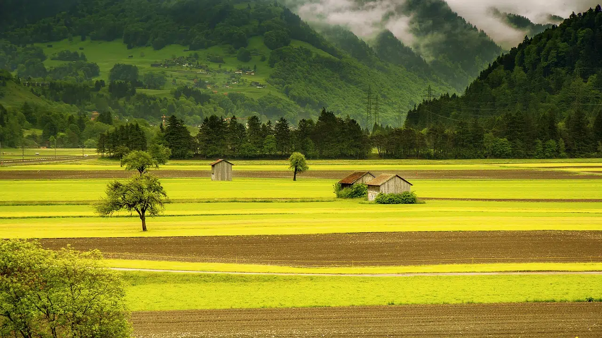
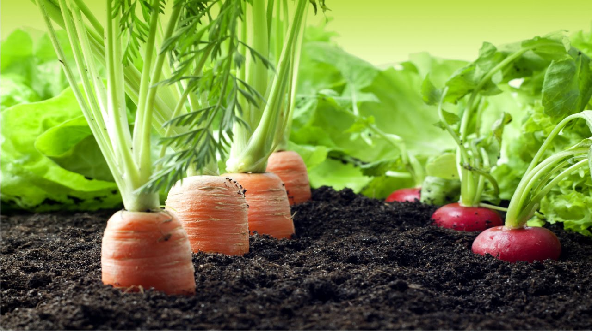
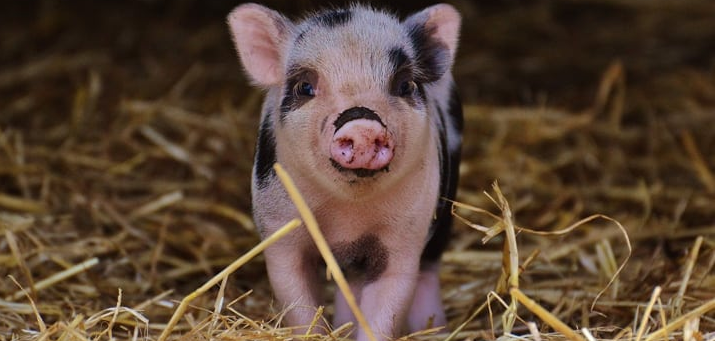
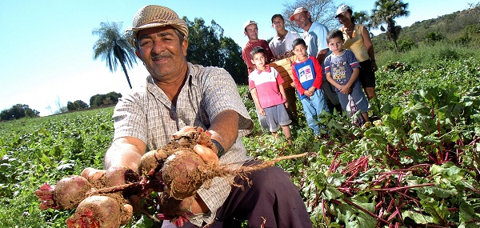

Inicio
a
01/07/2024

Em alta

Pergunta
Quais os sistemas de produção mais adequados para a agricultura familiar?

Por que devemos usar a agricultura orgânica?

Com o que posso alimentar um porco?
